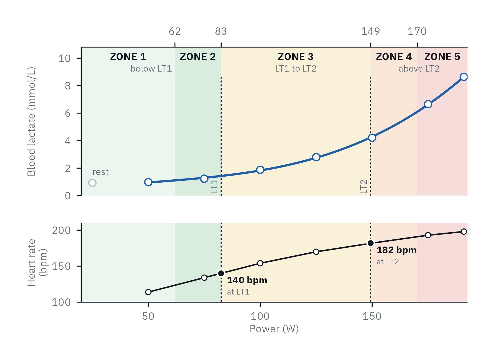
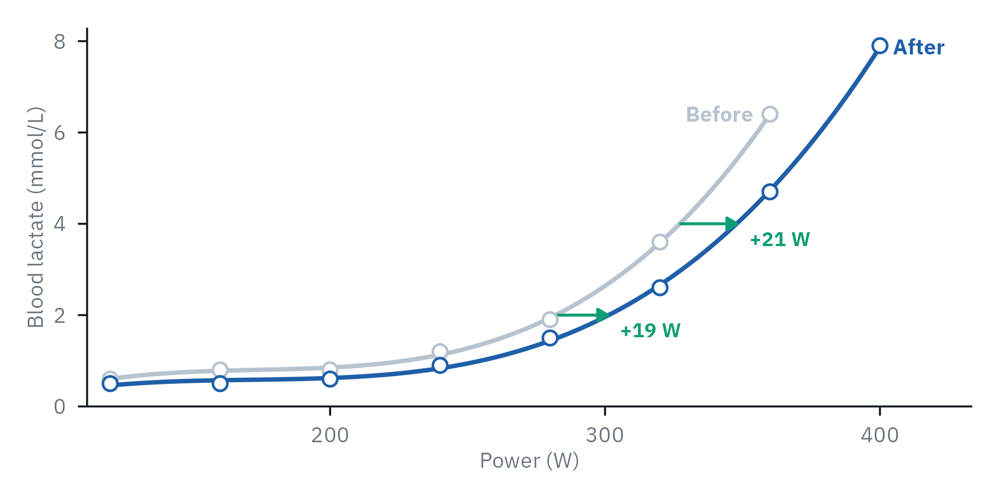

Using the thresholds
Zones and training
zones <- lactate_zones(results, lt1 = "LTP1",
lt2 = "ModDmax", model = 5)

LT1 and LT2 split the intensities into moderate, heavy and severe; five zones split the outer two.
- model
- 3 zones (the domains) or 5
- split
- Where zones 1|2 and 4|5 sit:
"equal","seiler", or your own - training_load()
- Time in each zone from training files, by power or heart rate
training_load(sessions, zones, column = "power",
measure = "intensity", interval = 1)
Choosing LT1 and LT2
| Methods with some support | |
|---|---|
| LT1 | Log-log, Bsln+ 0.5: moderate to heavy domain |
| LT2 | Bsln+ 1.5 (3-min stages), Log-Poly-ModDmax (4-min stages): close to the maximal lactate steady state |
Jamnick et al. 2018 and 2020; few methods have evidence for the heavy to severe boundary. Report the pair you chose.
Heart rate and RPE
Every zone gets heart rate and RPE ranges when they were recorded. Heart rate lags behind intensity in short intervals, so heart-rate zones suit steady efforts.
Predict and compare
predict_performance(results) own <- calibrate_performance(lab, "ltp2", "time", method = "LTP2", sport = "running", distance = 10000) predict_performance(results, equation = own)
Race times (running) and 45-min time-trial power (cycling), each with its 95% range, from published equations or your own athletes.

- compare_tests()
- Is a change larger than the noise of the method?
- curve_shift()
- How far the whole curve moved
- curve_shape()
- Did it shift, or change shape?
- lactate_trend()
- Where a series of tests is heading
- relative_thresholds()
- Per kg, % of peak intensity and heart rate
- reference_percentiles()
- Percentile among people of the same age and sex (cycling, general population)
What the predictions rest on
| Sport | From | Source |
|---|---|---|
| Running | IAT: 5 km to marathon; OBLA 4.0: marathon | Röcker 1998; Sjödin 1981 |
| Cycling | Six thresholds: 45-min time trial | Heuberger 2018, refitted |
| Rowing, swimming | Your own equation | calibrate_performance() |
Report and style
report_start(results, "LTP1", "ModDmax") |>
report_header(name = "Ana", lab = "Our lab",
logo = "logo.png") |>
report_summary() |>
report_zones() |>
report_save("ana.html", pdf = TRUE)
- test_report()
- The default two-page report in one call; 2-5 tests and their
datesfor the progress - report_*()
- Header, summary, zones, prediction, checks, test, methods, your own text
- lactate_report()
- Every threshold as a gt table for a paper
- gt_lactater()
- The same look for your own gt tables

The first page of a report: the two thresholds, what they mean, the zones.
Plots
- theme_lactater()
- The look of lactater's plots, for your own
- lactater.style
options(lactater.style = "night"), or"journal"for print- lactater.font
options(lactater.font = "IBM Plex Sans")
Beyond the step test
- vlamax()
- The maximal lactate accumulation rate (V̇Lamax) from a sprint
Learn more
Every method follows its original paper; the articles explain each one, its evidence, and how to read the checks.